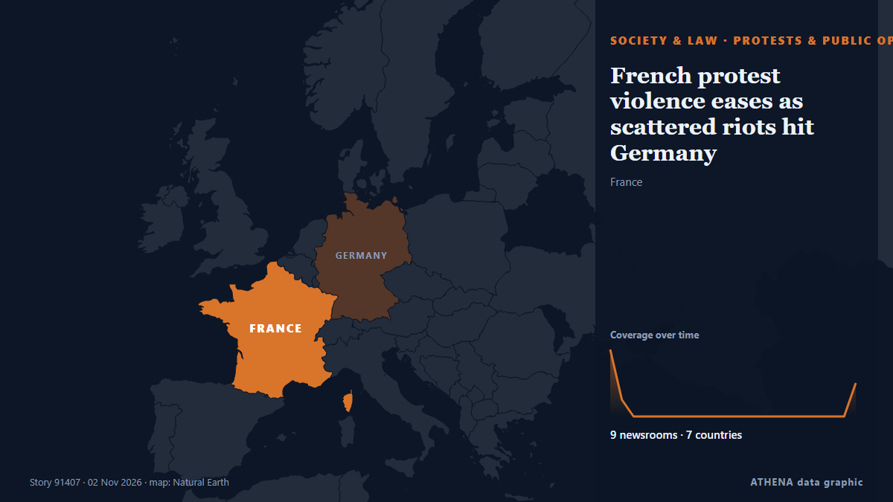

Протесты и общественное мнение
СпонсорПри поддержке  Cybernetics and Artificial Intelligence Lab Welcome to the Cybernetics and Artificial Intelligence Laboratory, established at the Department of Business Administration of the National
Cybernetics and Artificial Intelligence Lab Welcome to the Cybernetics and Artificial Intelligence Laboratory, established at the Department of Business Administration of the National
| 20 окт. | 0 |
|---|---|
| 21 окт. | 0 |
| 22 окт. | 0 |
| 23 окт. | 0 |
| 24 окт. | 0 |
| 25 окт. | 0 |
| 26 окт. | 0 |
| 27 окт. | 0 |
| 28 окт. | 1 |
| 29 окт. | 2 |
| 30 окт. | 10 |
| 31 окт. | 4 |
| 1 нояб. | 7 |
| 2 нояб. | 0 |
Заголовки приводятся на английском языке, как они были опубликованы.

French protest violence eases as scattered riots hit Germany
Police expect new demonstrations as schools at the heart of the movement reopen on Monday. из The Irish News (Belfast)
Serbia’s Gen Z Students Toppled a Strongman. Now Comes the Hard Part.
Victory is a test for whether youth protest movements can build governments that work. из To Vima (English)
UK police say 325 people were arrested at Palestine Action demo
British police arrest 139 Palestine Action supporters in London and Edinburgh ahead of a Supreme Court appeal challenging the UK government's ban. из The New Arab
France launches 'attempted murder' probe after petrol bomb attacks on security forces
PARIS: France on Sunday launched an attempted murder probe after petrol bombs were thrown at security forces during Paris protests, as footage of an officer in flames sparked outrage. из New Straits Times
Portuguese police clash with housing protesters, arrest 13
Riot police clashed with housing protesters in Lisbon and Porto, arresting 13 and injuring several demonstrators. из Arab News
Thousands join Indian opposition protest
India’s opposition parties staged major protests in New Delhi on Sunday against Prime Minister Narendra Modi’s government and a nationwide voter list review that has fuelled demonstrations since the… из France 24 English
USA Clock Change: Daylight Saving Time Ends November 1
Most of the United States will turn clocks back one hour on Sunday, November 1, restoring the usual winter time difference with Greece after a week in which the gap was one hour smaller. из Greek Reporter
At least 60 protesters injured in clashes across France
At least 60 protesters have been injured in clashes and unrest during demonstrations in several French cities. из AzerNews
France deploys 70,000 police officers to prepare for new wave of protests on Halloween
Emmanuel Macron's government deploys 70,000 police officers as France braces for a third week of intense protests amid over $1 billion in losses. из Fox News (World)
Police clear new Lisbon housing protest camp after thousands rally
LISBON, Nov 1 - Police moved into Lisbon's Rossio Square on Sunday to clear a tent camp erected after thousands marched demanding Portugal's minority centre-right government withdraw a rental bill… из The Straits Times
Thousands Take Part in Halloween Protests
Two demonstrations took place in Berlin. из Berlin Spectator
Mass protests sweep Italy during nationwide strike
Grassroots union Unione Sindacale di Base called 24-hour general strike, with protests planned in more than 40 cities. из Express Tribune
Gen Z protests reach Germany as over 160,000 expected at Halloween rallies
Demands include opposing compulsory military service and investing in education amid rising costs. из The Straits Times
Average taxi income rises: survey
A recent survey by the Moroccan Center for Citizenship found that 87.3% of respondents are dissatisfied with public healthcare services, while 76.2% are unhappy with taxi services. из Hespress English
Third weekend of protests in France as youth-led rallies sweep Europe
The Interior Ministry told reporters that 70,000 people are estimated to have turned out for the main protest in Paris. из The Irish News (Belfast)
Youth protests begin in over 30 German cities as authorities warn of possible unrest
In Berlin, demonstrators are gathering at the Brandenburg Gate with more than 10,000 participants expected. из TASS (English)
Fears of violence as France braces for Halloween protests
France will deploy some 70,000 police officers in Paris and other cities ahead of a new round of nationwide protests on Saturday, with Interior Minister Laurent Nuñez warning of a "very high risk of… из France 24 English
'Won't move forward without public': Arunachal CM amid protests over Siang project
Arunachal Pradesh CM Pema Khandu has assured residents that the proposed 11,200-MW Siang hydropower project will not be imposed on them, saying a decision will be taken only after its feasibility… из Times of India
Thousands of students and workers protest in Italy under heavy security
Thousands of students and workers took to the streets across Italy on Friday, calling for more school funding and relief from the soaring cost of living, amid a high police presence to avert possible… из The Local Italy